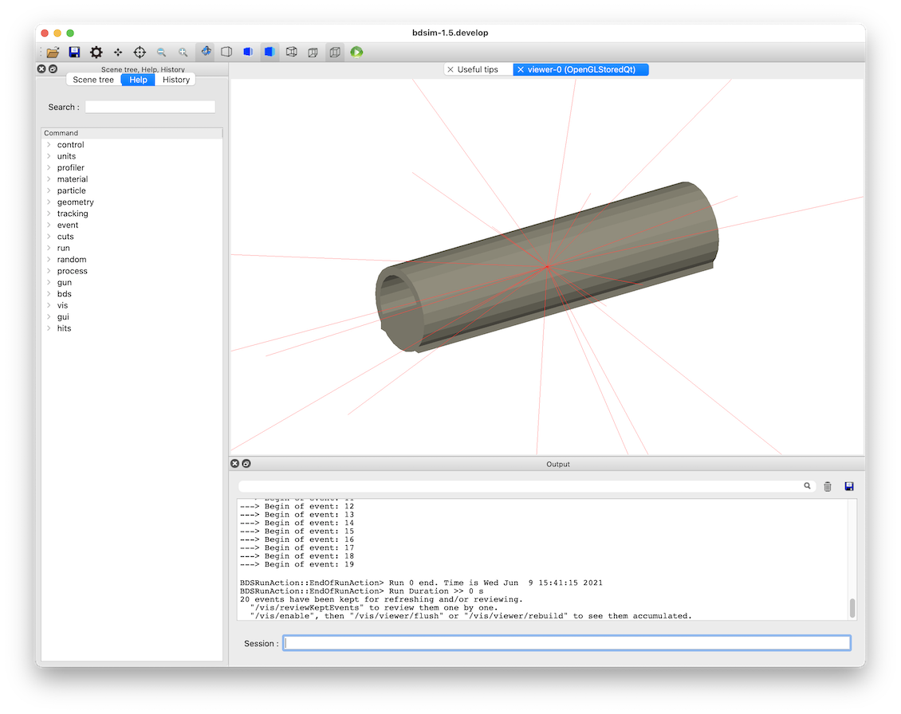
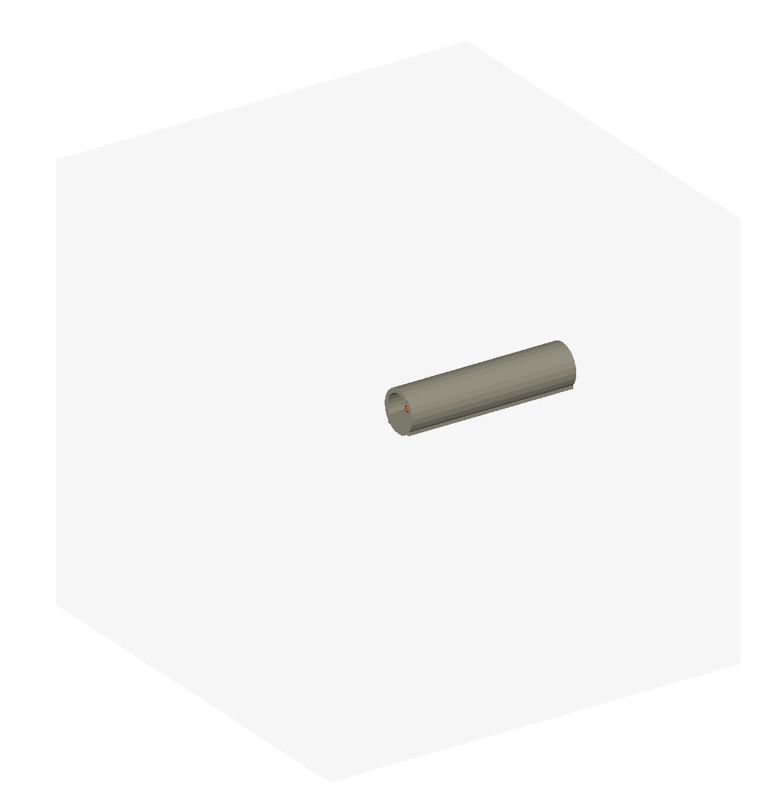
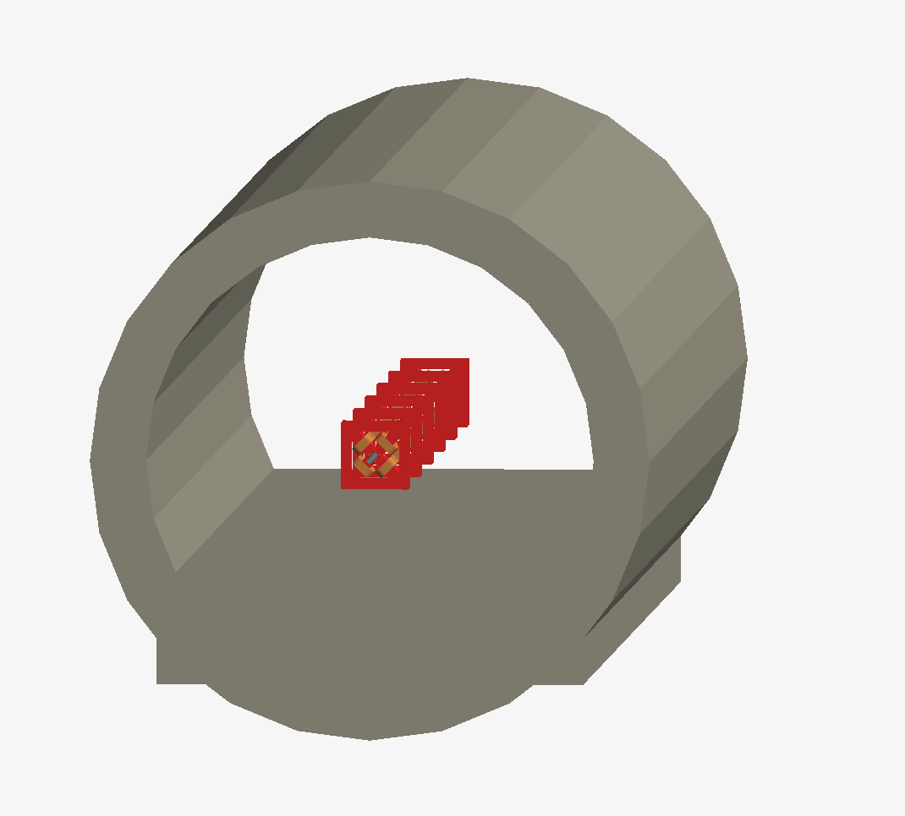
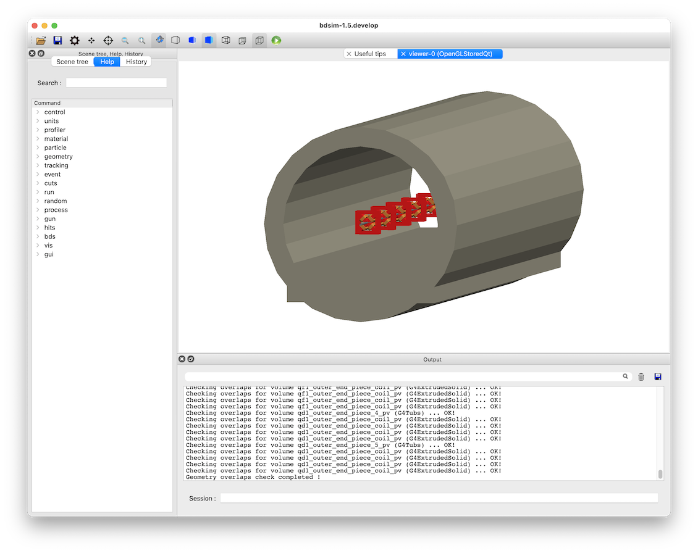
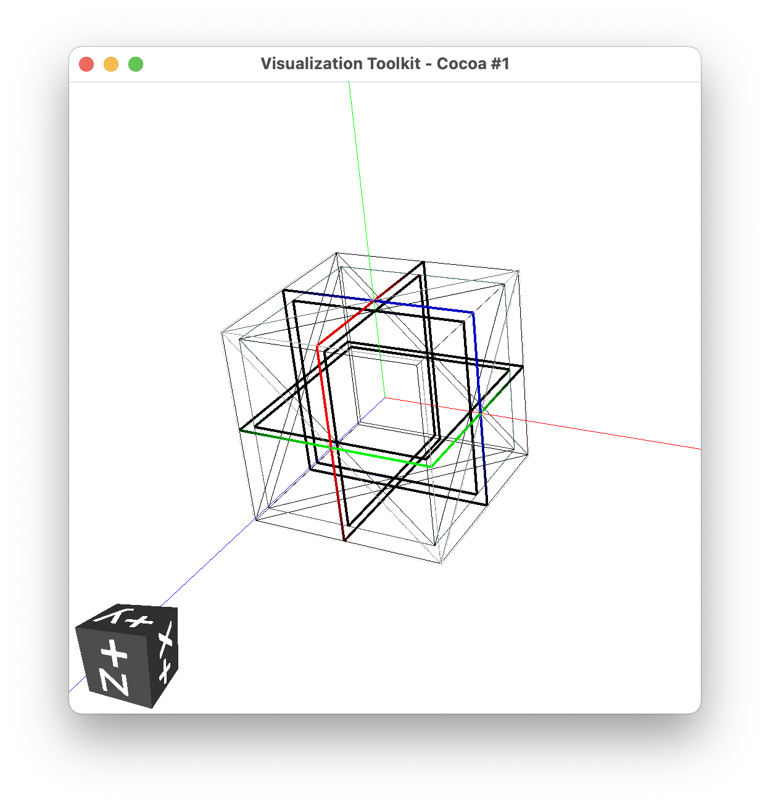
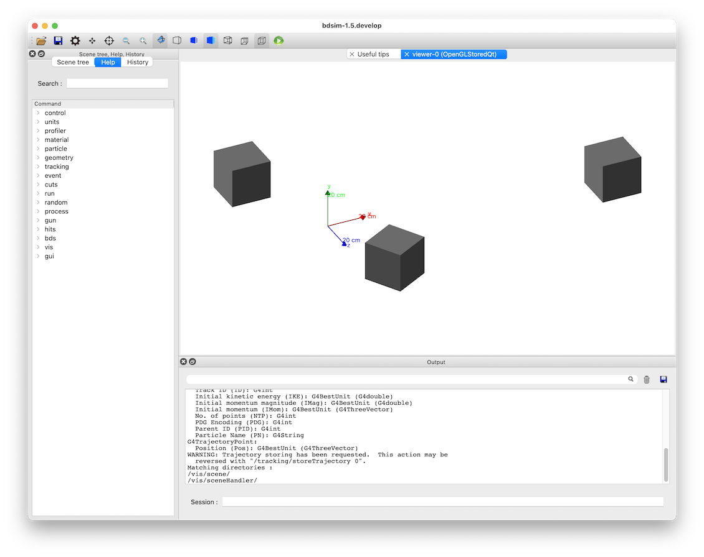
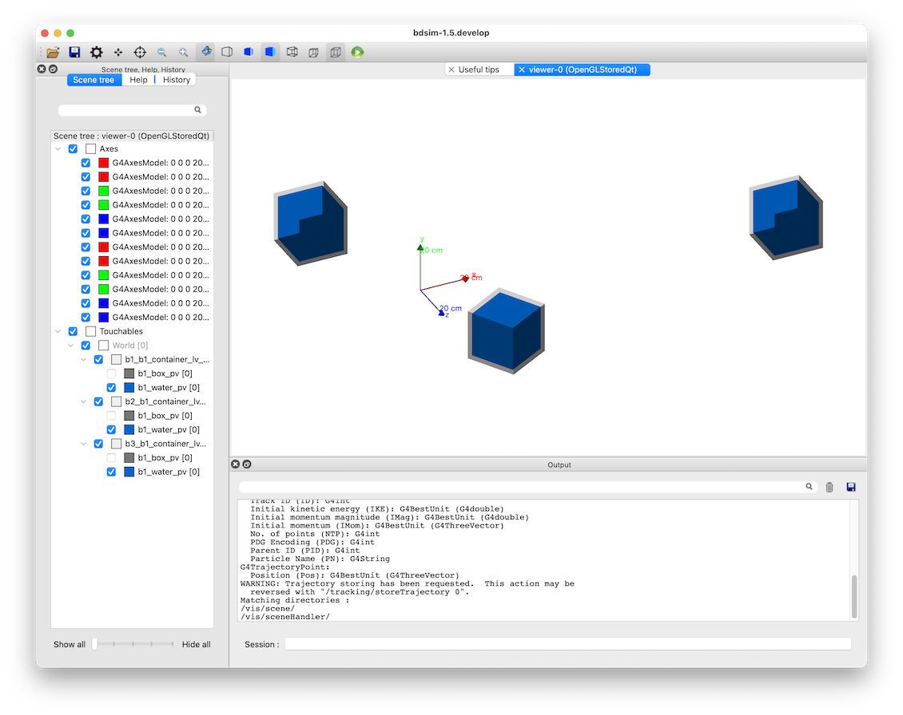
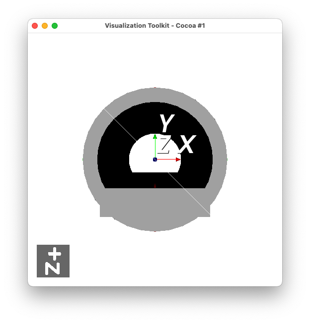
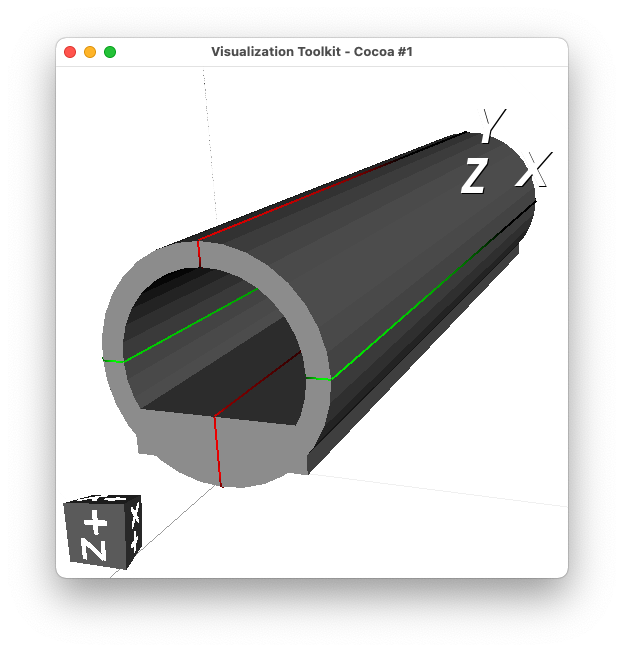
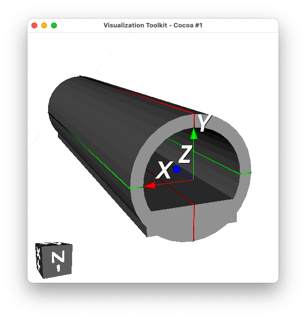

No Accelerator Model
Topics Covered
Placement of externally provided geometry
External source for world geometry
Shielding or tunnel placement
Based on models in
bdsim/examples/no-accelerator.
Contents
Preparation
BDSIM has been compiled and installed - including GDML support.
Introduction
BDSIM is intended to build a 3D Geant4 model of an accelerator. It normally creates an empty box of air as the outermost volume called the “world” (for the purpose of the simulation).
Conceptually though, we can use BDSIM as a simple interface to Geant4 to try things out relatively quickly. In early versions of BDSIM, it was forcibly required to build a beam line but this is no longer the case and a model can be made with no geometry or only other geometry.
Two common scenarios are presented:
Using an external file as the world and all contents
Placing one or more external files in a BDSIM-provided world
Note
If loading a complete piece of geometry as the world it will not have any fields, nor the ability to attach a field map. Field maps can only be used in accelerator components or placements of geometry.
World Geometry File
BDSIM can build a model by simply loading a geometry file for the world and building
no beam line. This will be passive geometry only (i.e. no fields). An example is provided
in world.gmad and contains:
beam, particle="e-",
energy=1*GeV,
distrType="sphere",
Z0=10*m;
option, worldGeometryFile="gdml:tunnel.gdml";
A random direction beam is also illustrated as a point-like source of particles in the middle of the tunnel geometry (which was placed at +10m from the origin and is 20m long).
{kind=link}

World Geometry File - Tunnel
Although this example is about not using a beamline, sometimes we do also include one.
In the case where BDSIM builds a beam line, it first calculates the extent of the beam line and any geometry placements and tunnel and creates an empty box big enough to encompass everything. Then, all the geometry is finally placed in the world. However, it may be chosen to provide a world volume yourself instead of the BDSIM-generated one.
We can use this as way to easily import tunnel or shielding geometry. A common task is to place shielding or a concrete tunnel around a beam line. If we assume the tunnel geometry is made in an external geometry package and provided as a GDML file, then we would initially think we can simply “place” this in the world with the beam line. However, we may cause overlaps that would result in bad tracking and volumes being missed.
Note
A convenient tool to prepare simple geometry in GDML is pyg4ometry as
described in Geometry Preparation. Scripts are provided here
as a demonstration.
Bad Example
As an example of what can go wrong, we build a beam line then try to place an externally
provided tunnel geometry over it. Tunnel geometry as described in Tunnel Preparation
is used - i.e. tunnel.gdml. We build a beam line and then make a placement of this
geometry where we want the tunnel. Here is the model as contained in the file
bad-hierarchy.gmad.
d1: drift, l=1*m;
qf1: quadrupole, l=0.4*m, k1=0.01;
qd1: quadrupole, l=0.4*m, k1=-0.01;
l1: line=(d1,qf1,d1,d1,qd1,d1);
l2: line=(l1,l1,l1);
use, l2;
beam, particle="e-",
energy=1*GeV;
tunnelPlacement: placement, geometryFile="gdml:tunnel.gdml";
option, checkOverlaps=1;
This is run in bdsim with:
bdsim --file=bad-hierarchy.gmad --output=none
Warning
When using any geometry not generated by BDSIM, we should always explicitly
check for overlaps. This is done in 2 ways - with the option, checkOverlaps=1;
and also interactively in the visualiser with /geometry/test/run.
The geometry is shown below and at first glance seems ok. This is because the material air and also the outermost volume of any geometry is made transparent for convenience.
{kind=link}

Apparently ok geometry, but actually overlapping. The air volume from the tunnel.gdml file is shown in light grey.
{kind=link}

Apparently ok geometry, but actually overlapping.
The overlap checking from the option in the input gmad does not give any overlaps for the
author, which is wrong. Running the test in the visualiser with the command
/geometry/test/run shows many overlaps as expected. We expect each beam
line component to overlap with the container air box of the tunnel geometry.
Running geometry overlaps check...
Checking overlaps for volume d1_0_pv (G4Tubs) ...
-------- WWWW ------- G4Exception-START -------- WWWW -------
*** G4Exception : GeomVol1002
issued by : G4PVPlacement::CheckOverlaps()
Overlap with volume already placed !
Overlap is detected for volume d1_0_pv:0 (G4Tubs)
with tunnelPlacmenet_tunnelPlacmenet_container_lv_0_pv:0 (G4Box) volume's
local point (3.18274,-27.3172,251.806), overlapping by at least: 24.7482 m
NOTE: Reached maximum fixed number -1- of overlaps reports for this volume !
*** This is just a warning message. ***
-------- WWWW -------- G4Exception-END --------- WWWW -------
This model is wrong because the tunnel.gdml file is made of a 50 x 50 x 50m box of air with the tunnel in it and this air box will overlap with the beam line as it placed at the same level in the hierarchy as it even if it doesn’t look like it and it looks like the tunnel is fine. This is shown in a sketch of the hierarchy below:
Pieces of geometry at the same level in the hierarchy should not spatially overlap.
Correct Example
To correctly do this, we load the tunnel as the “world” volume for BDSIM. This means
BDSIM will use this and place the beam line inside it. We just have to ensure that
the beam line will not touch the concrete part of the tunnel. This is done by design
and by the placement of the beam line. (See Offset for Main Beam Line for how to displace
the beam line from 0,0,0 and in direction 0,0,1). The example is provided in
world-tunnel.gmad and contains:
d1: drift, l=1*m;
qf1: quadrupole, l=0.4*m, k1=0.01;
qd1: quadrupole, l=0.4*m, k1=-0.01;
l1: line=(d1,qf1,d1,d1,qd1,d1);
l2: line=(l1,l1,l1);
use, l2;
beam, particle="e-",
energy=1*GeV;
option, worldGeometryFile="gdml:tunnel.gdml";
option, checkOverlaps=1;
We check overlaps in both ways (the option and interactively) and we find no overlaps as expected! The model is therefore safe to generate physics results from.
{kind=link}

Similar geometry but with the tunnel used as a world volume
Placement Only Model
We can make placements of geometry and let BDSIM generate a world box sufficiently big
to encompass each placement. This is shown in the example file placements-only.gmad,
which contains:
beam, particle="proton",
kineticEnergy=200*MeV,
distrType="sphere";
b1: placement, geometryFile="gdml:boxofwater.gdml", x=1*m, y=0.6*m, z=1*m;
b2: placement, geometryFile="gdml:boxofwater.gdml", x=-0.3*m, y=0.2*m, z=-0.3*m;
b3: placement, geometryFile="gdml:boxofwater.gdml", x=0.3*m, y=-0.2*m, z=0.1*m,
axisAngle=1,
angle=-pi/3,
axisY=1;
This places a piece of geometry 3 times in different places. BDSIM generates a world
volume of air to contain them. The geometry is made in the script makeboxofwater.py
using pyg4ometry and consists of a 20cm steel width, 1cm thick stainless steel box with
water inside. A container volume of air (20.2cm wide) is used to contain everything.
{kind=link}

Visualisation of the makeboxofwater.py script to create the geometry
as shown in the VTK visualiser of pyg4ometry.
{kind=link}

Visualisation in BDSIM of 3x placements of the same geometry.
{kind=link}

Visualisation in BDSIM of 3x placements of the same geometry with the
steel box made transparent and a set of unit vector axes added with the
command /vis/scene/add/axes 0 0 0 20 cm.
Tunnel Preparation
A simple of piece of geometry is created to show a (rough) tunnel. It is provided in the
script bdsim/examples/no-accelerator/maketunnel.py and uses pyg4ometry. A few points
of interest:
we check overlaps with the command
containerLV.checkOverlaps(recursive=True)and this gives the following print out:LogicalVolume.checkOverlaps> full daughter-mother intersection test tunnel_pv LogicalVolume.checkOverlaps> full daughter-mother coplanar test tunnel_pv
which means everything is ok - no overlaps detected.
the tunnel clearly has the floor piece sticking out of the cylinder - this is fine and just for the sake of the simplest geometry to illustrate code features.
The Python script can be run interactively in ipython or just on the terminal:
ipython
> import maketunnel
> maketunnel.MakeTunnel()
or:
python maketunnel.py
It will produce an output file called tunnel.gdml that is used in this example.
{kind=link}

{kind=link}

{kind=link}
